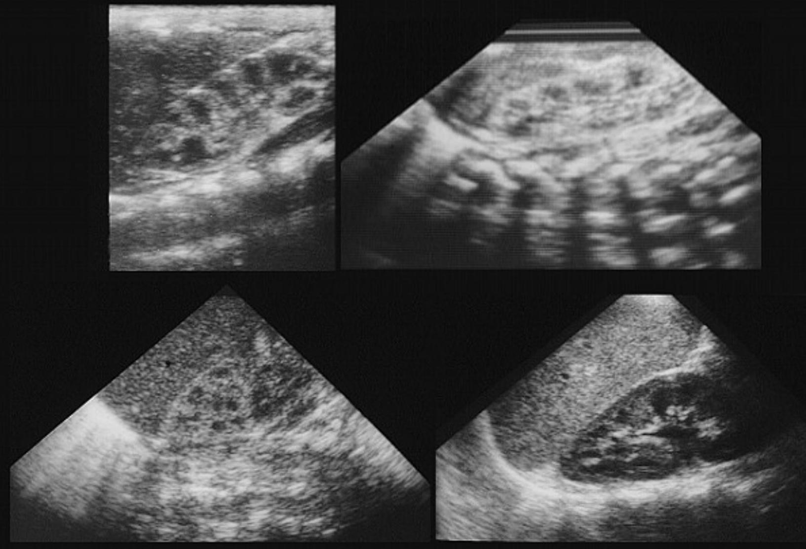
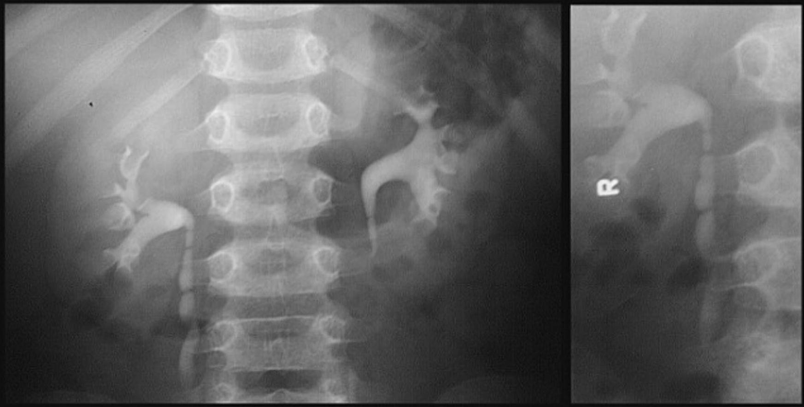
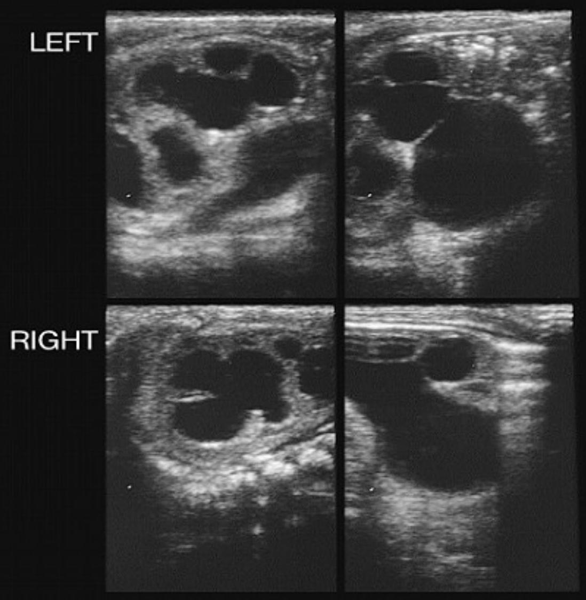
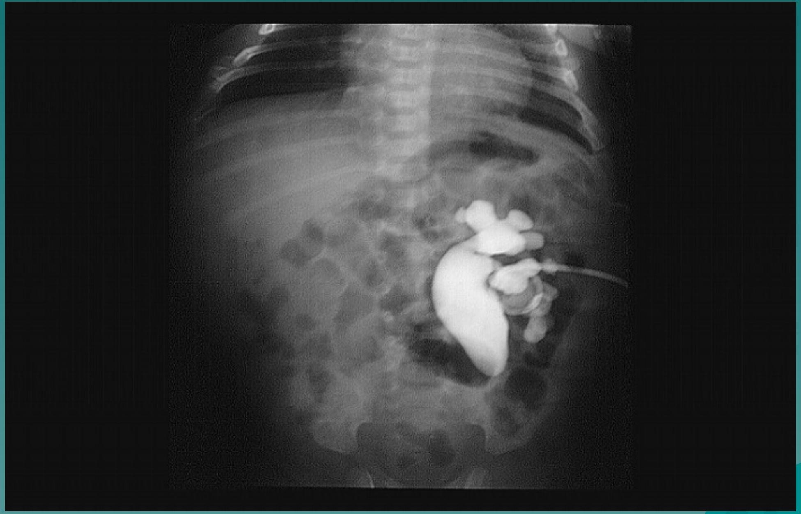
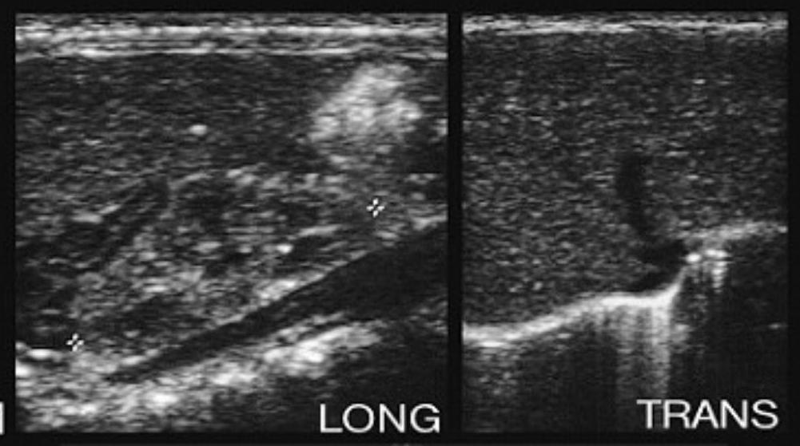
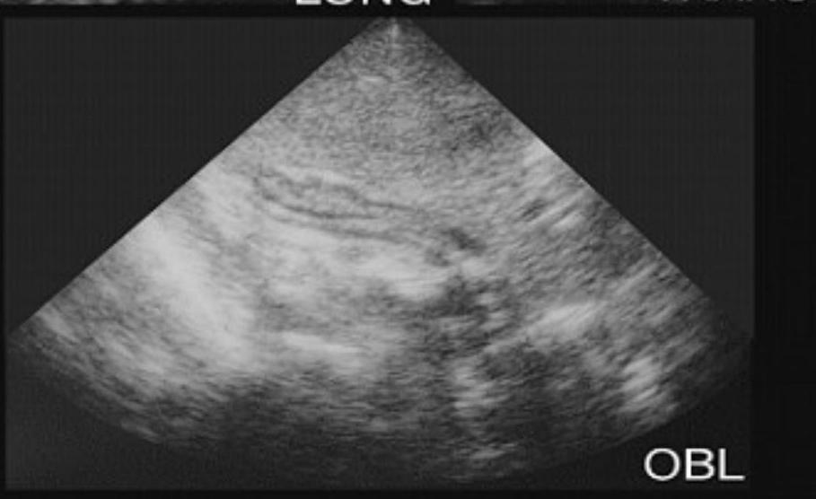
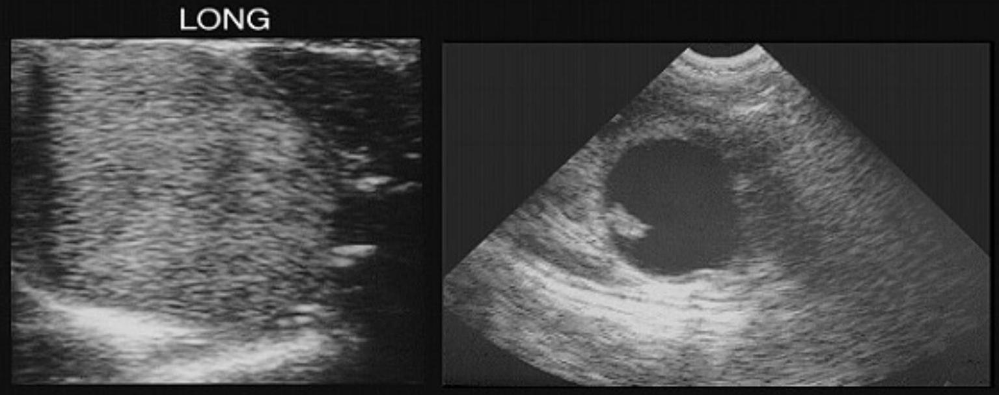
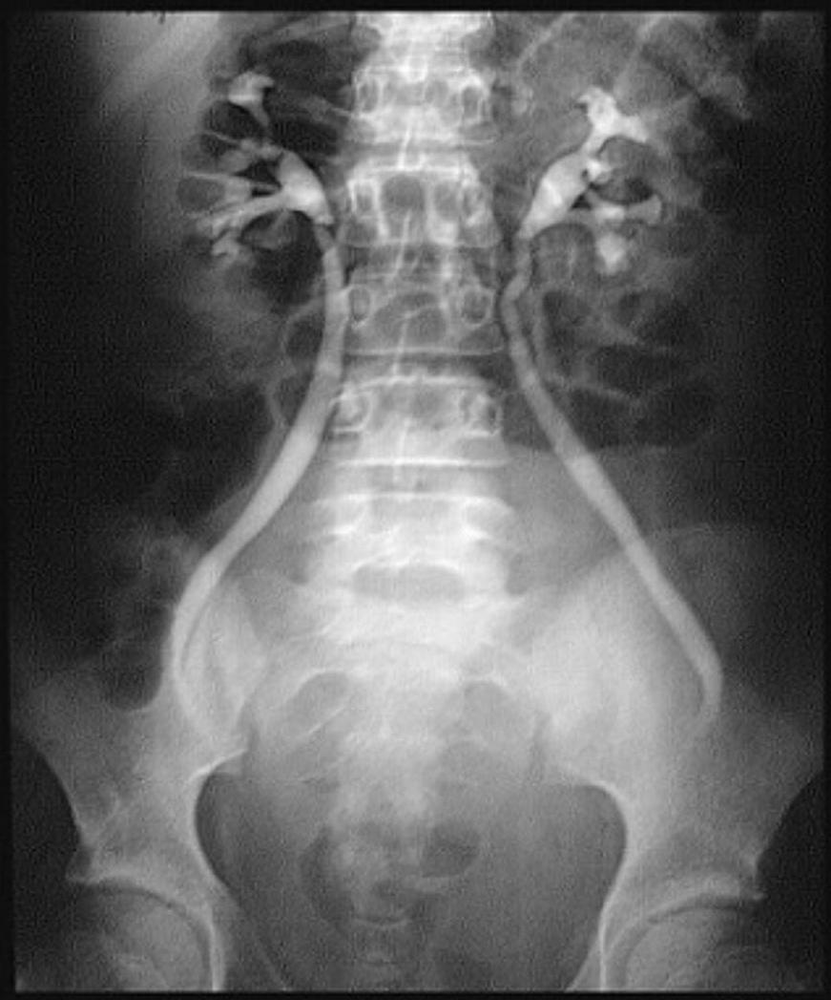
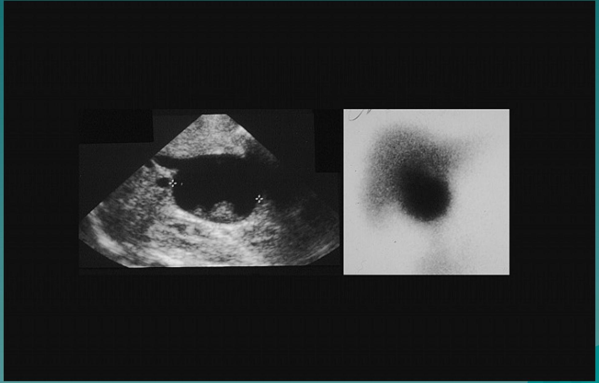
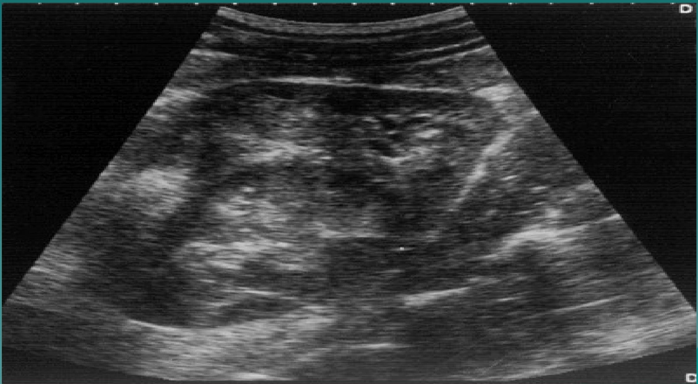

ABDOMINAL MASSES IN CHILDHOOD
ABDOMINAL MASSES IN CHILDHOOD Overview
- not a 'small adult'
- different constraints in choice of imaging modalities
- different range of presenting pathologies
- greater emphasis on congenital abnormalities
- incidence of malignant disease increases with increasing age
- exposure to radiation must be kept to a minimum in children
- certain modalities more suitable than others e.g. paucity of abdominal fat leads to good quality ultrasound images BUT reduced quality on CT
-
need for sedation/anesthesia in:
- painful procedures
- procedures requiring immobilization e.g. CT, MRJ
IMAGING MODALITIES
- Plain radiographs
- Ultrasound scanning
- Computerized Tomography (CT)
- Nuclear Medicine
- Intravenous Urography (IVU)
- Angiography
- Magnetic Resonance Imaging (MRJ)
Plain Radiographs:
- plain abdominal films are of limited use
- ? abdominal mass
- displaced bowel loop gas - location, size
- ± calcification - neuroblastoma, teratoma, nephroblastoma, hepatoblastoma
- associated skeletal abnormalities e.g. metastatic disease
- complimentary CXR - ? pulmonary metastasis e.g in neproblastoma, hepatoblastoma
Ultrasound Scanning:
- first examination of choice in neonate and child presenting with an abdominal mass
- may be the only one required to make a diagnosis and assist further management
- localization
- organ of origin
- internal structure of mass - cystic/solid, ± internal septae - (often an indicator of benign or malignant nature)
- ? abnormal vasculature - Doppler and color flow
- guide percutaneous biopsy for histopathological diagnosis
Computerized Tomography:
- adjunct to ultrasonography
- next investigation of choice
- additional anatomical information
- however - ionizing radiation
- requires sedation for those below 5 years
- only used when distinct benefits are identified
Nuclear Medicine:
- evaluation of function e.g.
- renal scan in assessment of renal function cases of hydronephrosis
Intravenous Urography:
- largely replaced by ultrasound and CT
- however - specific cases of renal masses, the appearance on IVU is characteristic and diagnostic
Angiography:
- also largely replaced by US, CT and MRI in the investigation and diagnosis of abdominal masses
- however, useful pre-op assessment of a tumor, particularly liver tumors - can demonstrate vascular supply of tumor from liver? arterial ? portal venous
Magnetic Resonance Imaging:
- no ionizing radiation
- multiplanner scanning and therefore useful tool in investigation of children with abdominal masses
- requires relatively long periods of immobility and therefore sedation / general anaesthesia is required for those under 6 years.
- not widely available
- very good demonstration of abdominal and pelvic masses
- best demonstration of extension of masses into spinal canal e.g. neuroblastoma
ABDOMINAL MASSES
Masses presenting in childhood in the abdomen can be divided into 4 broad categories:
- Retroperitoneal: renal non-renal
- Hepatobiliary
- Gastrointestinal
- Pelvic/Genital
ABDOMINAL MASS IN NEONATE
RENAL (55%)
Hydronephrosis (25%)
Multicystic dysplastic kidney (15%)
Polycystic kidney
Mesoblastic nephroma
Renal vein thrombosis
Normal Kidney (Ultrasound)

Normal IVU
Bilaterally Dilated Renal Pelves (Hydronephrosis)

Hydronephrosis IVU

NON-RENAL RETROPERITONEAL (10%)
Adrenal hemorrhage
Neuroblastoma
Teratoma
Normal Adrenal Gland US
FULL TERM
INFANT
Solid Suprarenal Mass Flattening Kidney (Neuroblastoma) US

GASTROINTESTINAL (15%)
Duplication
Volvulus
Cystic meconium peritonitis
Mesenteric cyst
PELVIC/GENITAL (15%)
Ovarian Cyst
Hydrometrocolpos
Pelvic Mass Rising Into Lower Abdomen

Displacement of Bladder and Lower Ureter Anteriorly
HEPATOBILIARY (5%)
Hemangjoendothilioma
Choledochal cyst
Hydrops of the gall bladder
US and HIDA Scan Showing Large Fluid Filled Cystic Bile Duct With Sludge (Choledochal Cyst)

ABDOMINAL MASSES IN THE INFANT AND CHILD
RENAL (55%)
Wilms tumor (22%)
Hydronephrosis (20%)
Cystic renal mass
Congenital anomaly
Wilm's Tumor. Well Circumscribed, Mixed Echopattern Lesion With Hypoechoic Rim of Compressed Renal Tissue

NON-RENAL RETROPERITONEAL (23%)
Neuroblastoma (21%)
Teratoma
GASTROINTESTINAL (18%)
Appendiceal abscess (10%) Hepatobilliary (6%)
PELVIC/GENITAL (4%)
Ovarian Cyst / teratoma
Hydrometrocolpos